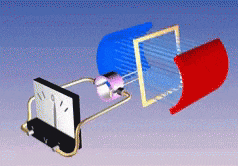
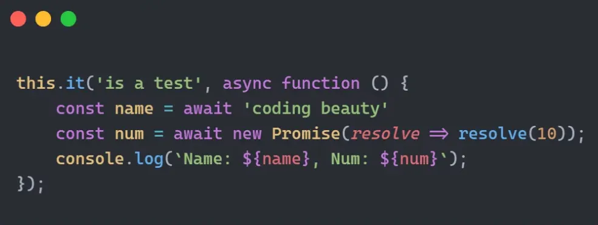
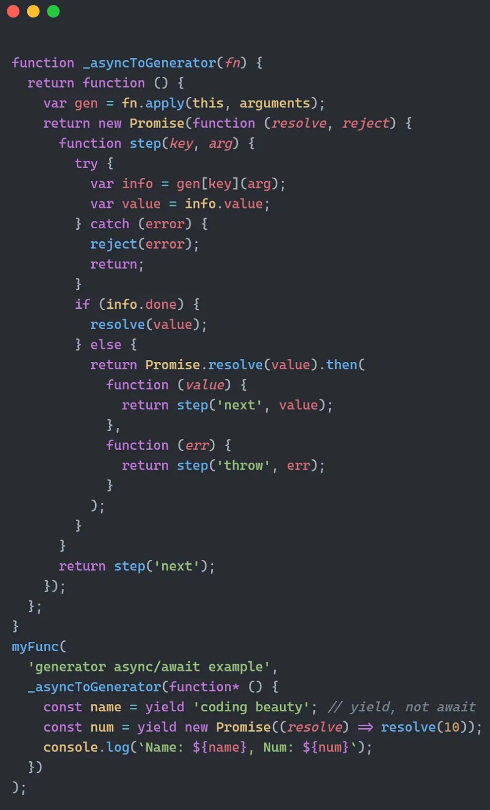
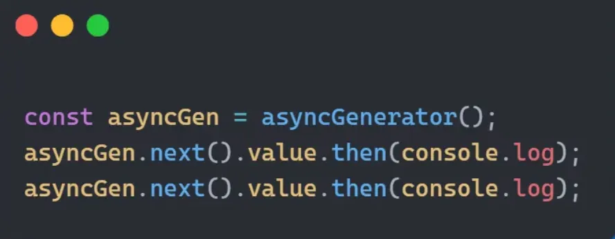
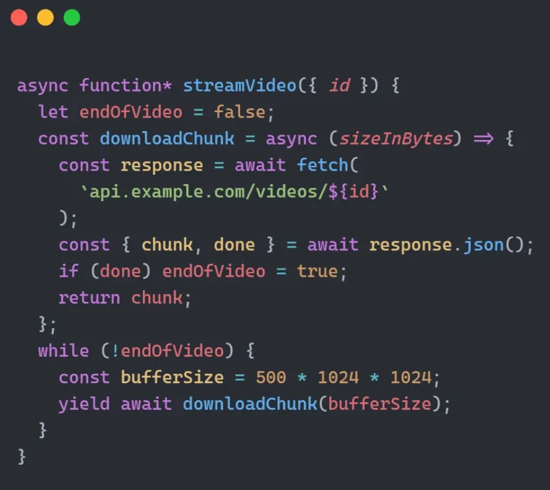
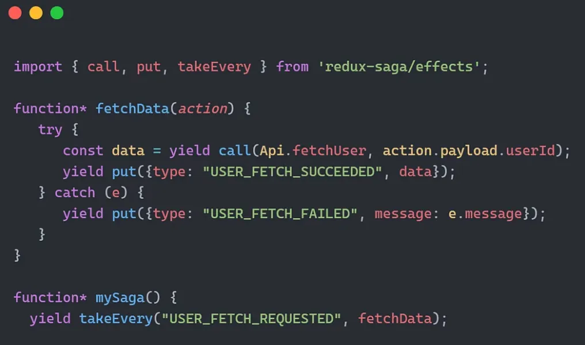
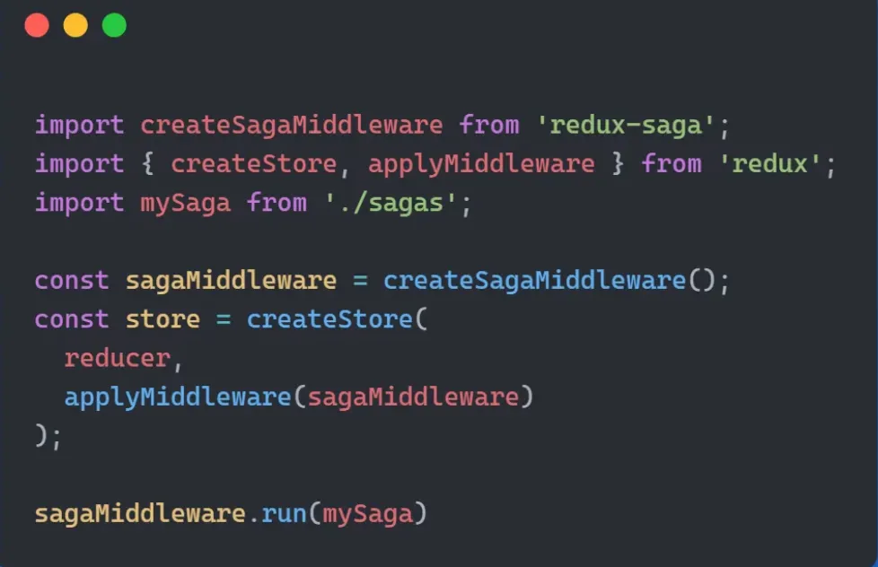

它们不仅仅是一个花哨的功能，我们将探索它们的多种强大用例，包括创建引人入胜的动画、通过互联网流式传输视频、节省内存等。
如果你从未听说过它们，可能会错过很多有趣的东西。
什么是 Generators？
Generators 是一种神奇的函数，它们可以在任意时刻暂停和恢复执行，而不是连续执行。
使用星号 * 标记函数为生成器，yield 在 .next() 调用时按需生成值，直到生成器完成为止。
这就像一个物理发电机，它不是一次性生成所有的电，而是随着时间推移逐渐生成。
你可以使用 for..of 循环来替代直接调用 .next()，这对于生成大量数据的生成器非常有用：
function* numberGenerator() {
let num = 1;
while (true) {
yield num++;
}
}
for (let value of numberGenerator()) {
if (value > 5) break;
console.log(value);
}
// 输出：1, 2, 3, 4, 5
惰性求值
“只在必要时计算”。
与 JavaScript 中的常规函数不同，常规函数会完全执行并返回结果。
假设你想要一个数字序列，但不确定需要多少个。生成器可以帮助你：
function* sequenceGenerator() {
let num = 1;
while (true) {
yield num++;
}
}
const generator = sequenceGenerator();
console.log(generator.next().value); // 1
console.log(generator.next().value); // 2
// 你可以根据需要继续获取下一个值
使用生成器，你只在需要时获取下一个数字。
更好的内存利用
生成器不会在内存中保存所有结果，而是动态生成。
想象一下，你需要一个包含一百万个数字的序列。使用常规函数，你需要将这些数字存储在一个数组中，消耗大量内存。
生成器效率更高：
function* bigSequence() {
let i = 0;
while (i < 1000000) {
yield i++;
}
}
const generator = bigSequence();
console.log(generator.next().value); // 0
console.log(generator.next().value); // 1
// 继续按需生成下一个值，而不是一次性生成所有值
处理异步任务
你知道吗？Babel 会将 async/await 转换为生成器，以便在不支持原生 async/await 的 JavaScript 版本中使用。
Babel 将以下代码：
转换为：
打字动画
打字动画可以吸引用户的注意力，使你的网站更加美观。
它们通过模拟人类的打字行为，为网站增添个性和特色，从而创造更具人性化的体验，并建立独特的品牌形象。
使用递归和 setTimeout() 可能是实现的一个不错的方式：
function typeWriter(text, i = 0) {
if (i < text.length) {
document.body.innerHTML += text.charAt(i);
setTimeout(() => typeWriter(text, i + 1), 100);
}
}
typeWriter("Hello, World!");
但是，在这种情况下，生成器更能大显身手：
function* typeWriterGenerator(text) {
let i = 0;
while (i < text.length) {
yield text.charAt(i++);
}
}
const generator = typeWriterGenerator("Hello, World!");
const interval = setInterval(() => {
const next = generator.next();
if (next.done) {
clearInterval(interval);
} else {
document.body.innerHTML += next.value;
}
}, 100);
因为我们可以随时生成值，所以可以使用 setInterval() 以时间间隔生成字符。
异步处理
注意：这与前面提到的 async/await 的基础不同。这里我们谈论的是异步生成器。
我们可以这样使用异步生成器：
这个工具在 Web 应用中以结构化、可读的方式流式传输数据非常强大——看看这个为类似 YouTube 的视频共享应用缓冲和流式传输数据的函数：
要消费这个异步生成器，我们使用 for await..of 循环：
redux-saga
redux-saga 是一个用于管理应用程序中副作用的库，拥有超过 100 万的每周下载量。
生成器在这个库中扮演了重要角色，处理 Redux 操作以简化测试和错误处理。
看看这个简单的 saga：
 每当 USER_FETCH_REQUESTED 操作被派发时，redux-saga 运行生成器，它依次调用 fetchData() 以执行异步网络请求。
关于 return 的说明
在生成器函数中返回值时会发生什么？让我们看看：
function* footballPlayers() {
yield "Messi";
yield "Ronaldo";
return "Neymar";
}
for (const player of footballPlayers()) {
console.log(player);
}
// 输出：Messi, Ronaldo
为什么 Neymar 不包含在生成的值中？
我们使用 .next() 来看看 done 属性是否有关系：
const players = footballPlayers();
console.log(players.next()); // { value: 'Messi', done: false }
console.log(players.next()); // { value: 'Ronaldo', done: false }
console.log(players.next()); // { value: 'Neymar', done: true }
结果显示，return 不是生成的值，因此 for..of 不会处理它。
你还记得我们的第一个例子吗？
function* numberGenerator() {
let num = 1;
while (num <= 3) {
yield num++;
}
return "done";
}
const generator = numberGenerator();
for (const value of generator) {
console.log(value);
}
// 输出：1, 2, 3
你可以看到，生成器只生成值，直到 done 为 true。
因此，return 会完成生成器并终止函数（就像其他函数一样）。
最后总结
JavaScript 生成器为控制流、内存效率和异步处理提供了强大的解决方案。它们通过动态动画、流式数据和管理副作用增强了 Web 开发。
让我们拥抱生成器的多功能性，编写优雅高效的 JavaScript 代码。